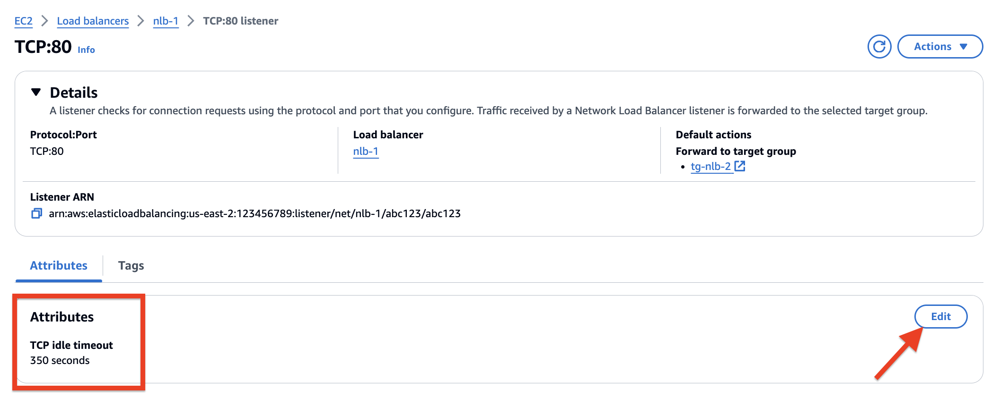

🙄 Finalmente AWS NLB Com Ajuste De Timeout
Sabe aquela funcionalidade que você pediu há anos e que achava que nunca ia chegar? Pois é, a AWS finalmente entregou! Agora, o Network Load Balancer (NLB) permite configurar o timeout de inatividade para conexões TCP. Antes, o valor era fixo em 350 segundos, o que dava alguma dor de cabeça em aplicações com tráfego de longa duração, como serviços de streaming, bancos de dados e até sistemas ERP.
Mas depois de um longo e tenebroso inverno, a AWS decidiu por algum motivo 🙄. Agora, você pode ajustar esse timeout para um valor entre 60 e 6000 segundos (sim, você não leu errado, 6000 segundos conhecido como 10 minutos), garantindo que suas conexões de longa duração não fiquem caindo à toa e sua aplicação funcione de forma mais fluida.
Se você tem um daqueles JAVA (Zoeira) Sistema pessadíssimo e lento reclamava de reconexões, agora pode respirar mais tranquilo. É só configurar o valor do timeout com o atributo tcp.idle_timeout.seconds e pronto. Vale lembrar que o valor padrão de 350 segundos continua lá, então ninguém vai ser pego de surpresa. Mas se sua aplicação exige mais tempo de conexão estável, agora dá pra personalizar como você quiser.
Enfim, depois de anos de espera, chegou o dia que a gente achou que não ia ver! 🎉
Aqui o LINK do anúcio lá na AWS
